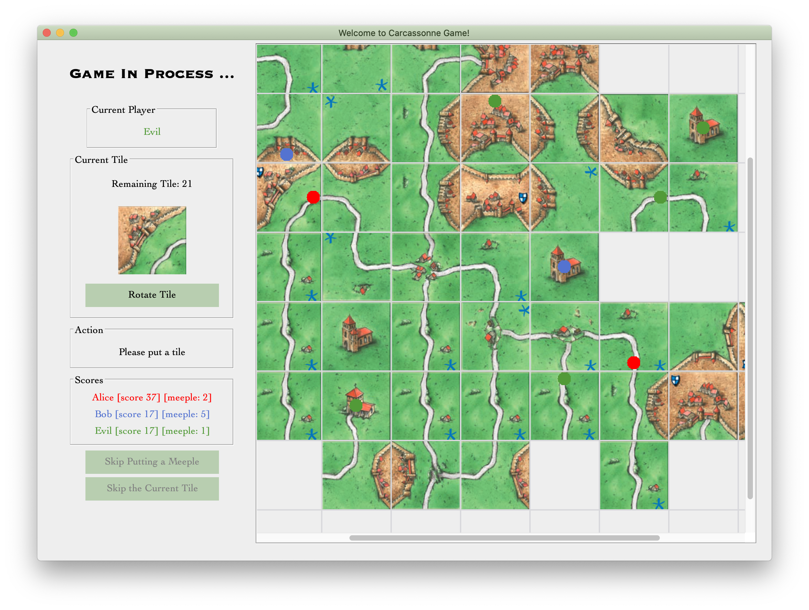

In this individual project, the classical board game Carcassonne is designed and implemented in Java.
The project is a course project of CMU 17-514, which is mostly about object oriented design and Java software design. The project contains a full cycle of software design and development, which means it also involves GUI design/implementation, testing and deployment.
Note: due to the CMU academic integrity rules, the project codes cannot be publicized.
Game Overview
Once you run the program, you will first be required to enter the number of players:
You are required to enter names of all players. The number of players should be between 2 and 5 (both inclusive).
Say now we have three players: Alice, Bob, and Evil. Then we start the game.
Below is the main interface of the game:
In the real board game, there exists a deck and each player is supposed to get a tile from the top of the deck in turn, and then put the tile on the game board accordingly. We also simulate the real game experience through the GUI design:
- Current Player: the player who is supposed to get a tile from the deck and put it on the game board;
- Current Tile: the tile on the top of the tile, which is assigned to the current player. It can be rotated (90 degree, clockwise) by clicking the button “Rotate Tile”;
- Action: action which the current player needs to take right now. It could be:
- “Please put a tile”: the player now should place the tile on the board. The tile may be rotated by the player. The “+” sign on the grid represents the positions that the tile can be placed on if the tile will not be rotated anymore;
- “Please put a meeple”: the player now should put a meeple on the tile which is just previously placed on the board. Once a meeple is placed, a small solid circle is drawn on the board, in the same color of the player’s name. If a pattern is completed, meeples on that pattern will be revoked.
- “Please skip putting a meeple”: if will happen if there are not any available positions, or the current players has no meeples right now. In this case, the player should click the button “Skipping Putting a Meeple” below to finish the current round.
- Scores: real-time scores and number of available meeples for each player.
Note it is also possible that a tile cannot be placed on any positions, even if it is rotated. In this case, simply click the button “Skip the Current tile” to drop the current tile and get the next tile.
The picture below is a screenshot of the main interface. The grid will automatically extend if necessary.

Once all tiles are used (dropped or placed), the game is over, and the final ranking will appear on the sidebar.
Software Design and Patterns
In a Java project, it is highly important to use some suitable design patterns and some strategies, in consideration of robustness, flexibility and extensibility.
Design Goal
The design goal in this project is to construct a comprehensive system that contains all concepts in the game and is able to execute all operations during the game. It should also correctly records the state of the game and return the correct results once the game is over.
As the game contains multiple objects, coupling between each object should be low, which may be helpful for debugging and implementation. Thus, each object should have clear responsibility and appropriate size of information, which should be helpful for implementation of algorithm in the future.
Object Model
(Note: due to the CMU academic integrity policy, this part cannot be publicized as it is a part of homework’s solution. If you are NOT taking this course currently AND you will NOT take this course in the future, please leave comments or contact me by e-mail in case you want more information about this part.)
Hierarchy and structure
(Note: due to the CMU academic integrity policy, this part cannot be publicized as it is a part of homework’s solution. If you are NOT taking this course currently AND you will NOT take this course in the future, please leave comments or contact me by e-mail in case you want more information about this part.)
Design Highlights
(Note: due to the CMU academic integrity policy, this part cannot be publicized as it is a part of homework’s solution. If you are NOT taking this course currently AND you will NOT take this course in the future, please leave comments or contact me by e-mail in case you want more information about this part.)